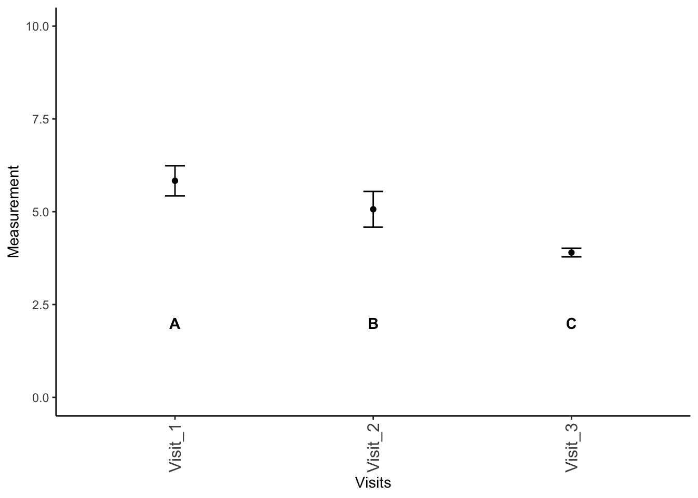

library(agricolae)
library(plyr)
library(tidyverse)
# NEW PACKAGES NEEDED
# Don't forget to install these on your machine
library(multcomp)
library(nlme)
library(PMCMRplus)13 ANOVA: Part 2
13.1 Two-way ANOVA
Previously, we discussed one-way ANOVAs, where we are looking at a single factor split across three or more groups and trying to determine if the means of these groups are equal (i.e., \(H_0: \mu_1=\mu_2=...\mu_i\)). ANOVA specifically allows us to analyze the variance of these different groups to ascertain which factors are most responsible for the variation we observe in the data. Because of the way ANOVA operates, we can actually test multiple different combinations of variables simultaneously in what we call a two-way ANOVA.
Don’t forget to load your required packages - some we have used before, like agricolae, plyr, and tidyverse, but others are new for this section: multcomp and nlme! As a reminder, these packages are designed for the following:
agricolae: originally written as a Master’s thesis at the Universidad Nacional de Ingeniería (Lima, Perú), this package is designed to help with agricultural research.plyr: tools for common problems, including splitting data, applying functions across data, and combining datasets together.tidyverse: one we are already familiar with; a wrapper for installingggplot2,dplyr,tidyr,readr,purrr,tibble,stringr, andforcats.multcomp: more in depth and better MULTiple COMParisons via linear models and related models.nlme: a package for fitting Gaussian and non-linear mixed-effect models.PMCMRplus: a math package with post-hoc tests for Friedman’s test
13.2 Designs
There are several different designs for two-way ANOVAs, and we will cover some of the most common designed here.
For these examples, we are going to randomly generated examples. I will refer to the variables as Response and Explanatory for simplicity’s sake.
13.2.1 Randomized block design
Randomized block designs look at combinations of variables that could be affecting the results. More specifically, we are looking at two strata or factors and their effects on a continuous response variable.
set.seed(8675309)
# random example
# Blocking variable
Blocking_Variable <- c("Group 1", "Group 2", "Group 3")
# explanatory variables
# these are your columns
# these are your primary hypothesis
Explanatory_1 <- c(10.1, 9.4, 11.1)
Explanatory_2 <- c(12, 13.0, 15.4)
Explanatory_3 <- c(11.2, 10.1, 11.9)
# create "data table" as we normally see it
# combine all columns
data_expanded <- cbind(Blocking_Variable,
Explanatory_1,
Explanatory_2,
Explanatory_3) |>
as.data.frame() # create data frame
data_expanded Blocking_Variable Explanatory_1 Explanatory_2 Explanatory_3
1 Group 1 10.1 12 11.2
2 Group 2 9.4 13 10.1
3 Group 3 11.1 15.4 11.9Note that this table is in the format that we most often see, but we need to reshape these data to make it easier for us to perform our analyses. I created the data here as a matrix with named columns and rows; the following code may need to be adjusted if you do things differently.
# expand to "long" format
# if not done earlier, convert to data frame
data <- data_expanded |>
# !by column for aggregating
# names_to = what to name column aggregation
# values_to = what the measurements should be called
pivot_longer(!Blocking_Variable, names_to = "Explanatory_Variables", values_to = "Measurements")
data# A tibble: 9 × 3
Blocking_Variable Explanatory_Variables Measurements
<chr> <chr> <chr>
1 Group 1 Explanatory_1 10.1
2 Group 1 Explanatory_2 12
3 Group 1 Explanatory_3 11.2
4 Group 2 Explanatory_1 9.4
5 Group 2 Explanatory_2 13
6 Group 2 Explanatory_3 10.1
7 Group 3 Explanatory_1 11.1
8 Group 3 Explanatory_2 15.4
9 Group 3 Explanatory_3 11.9 Now we can do our ANOVA. Note that I put factor around the blocking variable.
# mark block by factor
# best to always use
data_aov <- aov(Measurements ~ Explanatory_Variables + factor(Blocking_Variable), data)
summary(data_aov) Df Sum Sq Mean Sq F value Pr(>F)
Explanatory_Variables 2 17.182 8.591 14.412 0.0149 *
factor(Blocking_Variable) 2 6.829 3.414 5.728 0.0670 .
Residuals 4 2.384 0.596
---
Signif. codes: 0 '***' 0.001 '**' 0.01 '*' 0.05 '.' 0.1 ' ' 1In this particular example, the blocking variable does not significantly differ, however the explanatory variable does differ.
Remember, the columns represent your primary hypothesis. You will only plot your results if your primary hypothesis is significant!
Given that our primary null hypothesis is rejected (that is to say, not all means are equal), we need to plot our results.
To determine which mean(s) differ, we will use a Tukey Test. Unfortunately, the agricolae function HSD.test does not work as well for these multi-directional ANOVAs, so we need to use TukeyHSD.
tukey_data_aov <- TukeyHSD(data_aov)
tukey_data_aov Tukey multiple comparisons of means
95% family-wise confidence level
Fit: aov(formula = Measurements ~ Explanatory_Variables + factor(Blocking_Variable), data = data)
$Explanatory_Variables
diff lwr upr p adj
Explanatory_2-Explanatory_1 3.2666667 1.019919 5.5134144 0.0144034
Explanatory_3-Explanatory_1 0.8666667 -1.380081 3.1134144 0.4333834
Explanatory_3-Explanatory_2 -2.4000000 -4.646748 -0.1532523 0.0406301
$`factor(Blocking_Variable)`
diff lwr upr p adj
Group 2-Group 1 -0.2666667 -2.5134144 1.980081 0.9082398
Group 3-Group 1 1.7000000 -0.5467477 3.946748 0.1118461
Group 3-Group 2 1.9666667 -0.2800810 4.213414 0.0745795As we can see above, each pairwise comparison is given a \(p\) value for the level of difference. We need to manually label these groups based on these \(p\) values, with groups being considered different if \(p < 0.05\). We can do this as follows, but unfortunately, we need to do it by hand since we don’t have a short-form code (yet) for this conversion.
# change Explanatory_Variables to your data
Treatments <- unique(data$Explanatory_Variables)
sig_labels <- Treatments |>
as.data.frame() |>
mutate(Significance = rep(NA, length(Treatments)))
# Change Explanatory_Variables to your data
colnames(sig_labels) <- c("Explanatory_Variables", # MUST BE SAME AS DATA
"Significance")
tukey_data_aov$Explanatory_Variables diff lwr upr p adj
Explanatory_2-Explanatory_1 3.2666667 1.019919 5.5134144 0.01440339
Explanatory_3-Explanatory_1 0.8666667 -1.380081 3.1134144 0.43338343
Explanatory_3-Explanatory_2 -2.4000000 -4.646748 -0.1532523 0.04063012NOTE that I am going to have to adjust column names and variable names a few times. Based on the above, we can see that Explanatory_3 and Explanatory_1 are not different from each other, but everything else is in a different group relative to each other. We can label these by hand.
sig_labels$Significance <- c("A", "B", "A")
sig_labels Explanatory_Variables Significance
1 Explanatory_1 A
2 Explanatory_2 B
3 Explanatory_3 AAs we can see above, now only Explanatory_2 is given a different letter category.
Now, we can plot these different factors.
# summarize by group
# slight adjustment from previous
summary_data <- ddply(data, "Explanatory_Variables", summarise,
N = length(as.numeric(Measurements)),
mean = mean(as.numeric(Measurements)),
sd = sd(as.numeric(Measurements)),
se = sd / sqrt(N))
summary_data Explanatory_Variables N mean sd se
1 Explanatory_1 3 10.20000 0.8544004 0.4932883
2 Explanatory_2 3 13.46667 1.7473790 1.0088497
3 Explanatory_3 3 11.06667 0.9073772 0.5238745# SET Y LIMITS
# change based on observed data
ylims <- c(0, 20)
# set label height, can change before plotting function
label_height <- 4
ggplot(summary_data, # plot summary data
# Define plotting - x by group, y is mean, grouping by group
aes(x = Explanatory_Variables, y = mean)) +
# add points to plot for y values
geom_point() +
# add error bars around points
geom_errorbar(data = summary_data,
# define error bars
aes(ymin = mean - 2*se, ymax = mean+2*se),
# width of bar
width = 0.1) +
# set vertical limits for plot
ylim(ylims) +
# make it a classic theme - more legible
theme_classic() +
# add text to plot
geom_text(data = sig_labels,
# make bold
fontface = "bold",
# define where labels should go
aes(x = Explanatory_Variables,
# define height of label
y = 4,
# what are the labels?
label = paste0(Significance))) +
xlab("Treatment") +
ylab("Mean") +
# remove legend - not needed here
theme(legend.position = "none",
# make label text vertical, easier to read
axis.text.x = element_text(angle = 90,
# vertical offset of text
vjust = 0.5,
# text size
size = 12))13.2.2 Repeated measures
Now, we are going to do a repeated measures ANOVA, where we have the same individuals being measured multiple times. Consider the following imaginary dataset:
Visit_1 <- c(5.5,6.2,5.8)
Visit_2 <- c(4.6,5.4,5.2)
Visit_3 <- c(3.8,4.0,3.9)
Individuals <- c(paste0("Individual"," ",1:3))
data <- cbind(Individuals,
Visit_1,
Visit_2,
Visit_3) |>
as.data.frame() |>
pivot_longer(!Individuals,
names_to = "Visits",
values_to = "Measurements")
data# A tibble: 9 × 3
Individuals Visits Measurements
<chr> <chr> <chr>
1 Individual 1 Visit_1 5.5
2 Individual 1 Visit_2 4.6
3 Individual 1 Visit_3 3.8
4 Individual 2 Visit_1 6.2
5 Individual 2 Visit_2 5.4
6 Individual 2 Visit_3 4
7 Individual 3 Visit_1 5.8
8 Individual 3 Visit_2 5.2
9 Individual 3 Visit_3 3.9 We need to perform the ANOVA again, but we need to account for the factor of which locations are repeated.
repeated_aov <- aov(Measurements ~ factor(Visits) + Error(factor(Individuals)), data)
summary(repeated_aov)
Error: factor(Individuals)
Df Sum Sq Mean Sq F value Pr(>F)
Residuals 2 0.4867 0.2433
Error: Within
Df Sum Sq Mean Sq F value Pr(>F)
factor(Visits) 2 5.687 2.8433 89.79 0.000475 ***
Residuals 4 0.127 0.0317
---
Signif. codes: 0 '***' 0.001 '**' 0.01 '*' 0.05 '.' 0.1 ' ' 1Unfortunately, because of the model this is, we cannot perform a Tukey Test on the “object” that is created from this ANOVA analysis. We can, however, approach this from a different direction and get our Tukey results (thanks to Henrik on StackOverflow!). For this to work, we need to install the packages nlme and multcomp.
# ensure data is proper format
data$Individuals <- as.factor(data$Individuals)
data$Visits <- as.factor(data$Visits)
data$Measurements <- as.numeric(data$Measurements)The next part of the code fits a linear model to the data. A linear model, which we will cover later in the class, is mathematically very similar to an ANOVa. However, we can data from this model and extract the ANOVA data to understand more about the interactions. We need to use a linear model for this to account with the relationships between the two.
# fit a linear mixed-effects model
# similar to ANOVA
lme_data <- lme(Measurements ~ Visits,
data = data,
# define repeated section
random = ~1|Individuals)
# perform ANOVA on model
anova(lme_data) numDF denDF F-value p-value
(Intercept) 1 4 900.1654 <.0001
Visits 2 4 89.7894 5e-04As we can see above, we can get the ANOVA results from this linear mixed-effects model fit to the dataset. Now, we need to know post-hoc which sets are different:
lme_data |>
# "general linear hypothesis"
# define a comparison to make
# can add corrections like test = adjusted (type = "bonferroni")
glht(linfct = mcp(Visits = "Tukey")) |>
# return a summary of the above
summary()
Simultaneous Tests for General Linear Hypotheses
Multiple Comparisons of Means: Tukey Contrasts
Fit: lme.formula(fixed = Measurements ~ Visits, data = data, random = ~1 |
Individuals)
Linear Hypotheses:
Estimate Std. Error z value Pr(>|z|)
Visit_2 - Visit_1 == 0 -0.7667 0.1453 -5.277 <1e-06 ***
Visit_3 - Visit_1 == 0 -1.9333 0.1453 -13.306 <1e-06 ***
Visit_3 - Visit_2 == 0 -1.1667 0.1453 -8.030 <1e-06 ***
---
Signif. codes: 0 '***' 0.001 '**' 0.01 '*' 0.05 '.' 0.1 ' ' 1
(Adjusted p values reported -- single-step method)We can see that every visit is different.
# manually labeling
sig_levels_repeated <- matrix(data = c("Visit_1", "A",
"Visit_2", "B",
"Visit_3", "C"),
byrow = T, ncol = 2) |> as.data.frame()
# make labels match!
colnames(sig_levels_repeated) <- c("Visits", "Significance")Let’s plot these. Note that we are not summarizing these the same way, since things are varying based on individual as well.
Note: For reasons I am not certain, you need to put the locations and then ggplot uses these colors to define everything. I really don’t know why this is happening, so if you have a solution, let me know.
summary_data <- ddply(data, "Visits", summarise,
N = length(as.numeric(Measurements)),
mean = mean(as.numeric(Measurements)),
sd = sd(as.numeric(Measurements)),
se = sd / sqrt(N))ggplot(summary_data,
aes(x = Visits, y = mean)) +
geom_point() +
geom_errorbar(data = summary_data,
# define error bars
aes(ymin = mean - 2*se, ymax = mean+2*se),
# width of bar
width = 0.1) +
# set vertical limits for plot
ylim(c(0,10)) +
# make it a classic theme - more legible
theme_classic() +
# add text to plot
geom_text(data = sig_levels_repeated,
# make bold
fontface = "bold",
# define where labels should go
aes(x = Visits,
# define height of label
y = 2,
# what are the labels?
label = paste0(Significance))) +
xlab("Visits") +
ylab("Measurement") +
# remove legend - not needed here
theme(legend.position = "none",
# make label text vertical, easier to read
axis.text.x = element_text(angle = 90,
# vertical offset of text
vjust = 0.5,
# text size
size = 12))
13.2.3 Factorial ANOVA
Mathematically, a factorial ANOVA is the same as a randomized block ANOVA; please see that section for information on how to run this test.
13.2.4 ANOVA with interaction
Sometimes when we running a model, we want to look for interactive effects. Interactive effects are situations where one (or both) variables on their own do not effect the data, but there is a cumulative effect between variables that effects things. Let’s look at an example, based on our initial example but with the data altered.
set.seed(8675309)
# we are using data from the randomized black ANOVA again
data_expanded Blocking_Variable Explanatory_1 Explanatory_2 Explanatory_3
1 Group 1 10.1 12 11.2
2 Group 2 9.4 13 10.1
3 Group 3 11.1 15.4 11.9### YOU DO NOT NEED TO DO THIS
### CREATING DATA FOR EXAMPLE
data_expanded$Explanatory_1 <- as.numeric(data_expanded$Explanatory_1)
data_expanded$Explanatory_2 <- as.numeric(data_expanded$Explanatory_2)
data_expanded$Explanatory_3 <- as.numeric(data_expanded$Explanatory_3)
# create some pseudorandom data
# [,-1] excludes first column - group data
data_expanded2 <- cbind(Blocking_Variable,
data_expanded[,-1] - 0.75)
data_expanded3 <- cbind(Blocking_Variable,
data_expanded[,-1]*1.05)
data_expanded <- rbind(data_expanded,
data_expanded2,
data_expanded3)
# expand to "long" format
data <- data_expanded |>
# convert to data frame
as.data.frame() |>
# !by column for aggregating
# names_to = what to name column aggregation
# values_to = what the measurements should be called
pivot_longer(!Blocking_Variable, names_to = "Treatments", values_to = "Measurements")
# specifying factor to be safe
interactive_aov <- aov(Measurements ~ factor(Treatments) +
factor(Blocking_Variable) +
factor(Treatments)*factor(Blocking_Variable),
data)
summary(interactive_aov) Df Sum Sq Mean Sq F value Pr(>F)
factor(Treatments) 2 53.28 26.640 59.680 1.14e-08
factor(Blocking_Variable) 2 21.18 10.588 23.719 9.01e-06
factor(Treatments):factor(Blocking_Variable) 4 7.39 1.848 4.141 0.015
Residuals 18 8.03 0.446
factor(Treatments) ***
factor(Blocking_Variable) ***
factor(Treatments):factor(Blocking_Variable) *
Residuals
---
Signif. codes: 0 '***' 0.001 '**' 0.01 '*' 0.05 '.' 0.1 ' ' 1As we can see above, we have very significant effects for Treatment and Blocking_Variable, but a less significant effect for the interaction between the two. Remember - we only need to plot our primary hypothesis. Note however, that Tukey gives us our differences and \(p\) values for each set of tests and comparisons:
TukeyHSD(interactive_aov) Tukey multiple comparisons of means
95% family-wise confidence level
Fit: aov(formula = Measurements ~ factor(Treatments) + factor(Blocking_Variable) + factor(Treatments) * factor(Blocking_Variable), data = data)
$`factor(Treatments)`
diff lwr upr p adj
Explanatory_2-Explanatory_1 3.3211111 2.51730768 4.124915 0.0000000
Explanatory_3-Explanatory_1 0.8811111 0.07730768 1.684915 0.0304521
Explanatory_3-Explanatory_2 -2.4400000 -3.24380343 -1.636197 0.0000011
$`factor(Blocking_Variable)`
diff lwr upr p adj
Group 2-Group 1 -0.2711111 -1.0749145 0.5326923 0.6710682
Group 3-Group 1 1.7283333 0.9245299 2.5321368 0.0000928
Group 3-Group 2 1.9994444 1.1956410 2.8032479 0.0000159
$`factor(Treatments):factor(Blocking_Variable)`
diff lwr
Explanatory_2:Group 1-Explanatory_1:Group 1 1.931667e+00 0.02027781
Explanatory_3:Group 1-Explanatory_1:Group 1 1.118333e+00 -0.79305553
Explanatory_1:Group 2-Explanatory_1:Group 1 -7.116667e-01 -2.62305553
Explanatory_2:Group 2-Explanatory_1:Group 1 2.948333e+00 1.03694447
Explanatory_3:Group 2-Explanatory_1:Group 1 -1.776357e-15 -1.91138886
Explanatory_1:Group 3-Explanatory_1:Group 1 1.016667e+00 -0.89472219
Explanatory_2:Group 3-Explanatory_1:Group 1 5.388333e+00 3.47694447
Explanatory_3:Group 3-Explanatory_1:Group 1 1.830000e+00 -0.08138886
Explanatory_3:Group 1-Explanatory_2:Group 1 -8.133333e-01 -2.72472219
Explanatory_1:Group 2-Explanatory_2:Group 1 -2.643333e+00 -4.55472219
Explanatory_2:Group 2-Explanatory_2:Group 1 1.016667e+00 -0.89472219
Explanatory_3:Group 2-Explanatory_2:Group 1 -1.931667e+00 -3.84305553
Explanatory_1:Group 3-Explanatory_2:Group 1 -9.150000e-01 -2.82638886
Explanatory_2:Group 3-Explanatory_2:Group 1 3.456667e+00 1.54527781
Explanatory_3:Group 3-Explanatory_2:Group 1 -1.016667e-01 -2.01305553
Explanatory_1:Group 2-Explanatory_3:Group 1 -1.830000e+00 -3.74138886
Explanatory_2:Group 2-Explanatory_3:Group 1 1.830000e+00 -0.08138886
Explanatory_3:Group 2-Explanatory_3:Group 1 -1.118333e+00 -3.02972219
Explanatory_1:Group 3-Explanatory_3:Group 1 -1.016667e-01 -2.01305553
Explanatory_2:Group 3-Explanatory_3:Group 1 4.270000e+00 2.35861114
Explanatory_3:Group 3-Explanatory_3:Group 1 7.116667e-01 -1.19972219
Explanatory_2:Group 2-Explanatory_1:Group 2 3.660000e+00 1.74861114
Explanatory_3:Group 2-Explanatory_1:Group 2 7.116667e-01 -1.19972219
Explanatory_1:Group 3-Explanatory_1:Group 2 1.728333e+00 -0.18305553
Explanatory_2:Group 3-Explanatory_1:Group 2 6.100000e+00 4.18861114
Explanatory_3:Group 3-Explanatory_1:Group 2 2.541667e+00 0.63027781
Explanatory_3:Group 2-Explanatory_2:Group 2 -2.948333e+00 -4.85972219
Explanatory_1:Group 3-Explanatory_2:Group 2 -1.931667e+00 -3.84305553
Explanatory_2:Group 3-Explanatory_2:Group 2 2.440000e+00 0.52861114
Explanatory_3:Group 3-Explanatory_2:Group 2 -1.118333e+00 -3.02972219
Explanatory_1:Group 3-Explanatory_3:Group 2 1.016667e+00 -0.89472219
Explanatory_2:Group 3-Explanatory_3:Group 2 5.388333e+00 3.47694447
Explanatory_3:Group 3-Explanatory_3:Group 2 1.830000e+00 -0.08138886
Explanatory_2:Group 3-Explanatory_1:Group 3 4.371667e+00 2.46027781
Explanatory_3:Group 3-Explanatory_1:Group 3 8.133333e-01 -1.09805553
Explanatory_3:Group 3-Explanatory_2:Group 3 -3.558333e+00 -5.46972219
upr p adj
Explanatory_2:Group 1-Explanatory_1:Group 1 3.84305553 0.0464895
Explanatory_3:Group 1-Explanatory_1:Group 1 3.02972219 0.5317567
Explanatory_1:Group 2-Explanatory_1:Group 1 1.19972219 0.9173224
Explanatory_2:Group 2-Explanatory_1:Group 1 4.85972219 0.0010200
Explanatory_3:Group 2-Explanatory_1:Group 1 1.91138886 1.0000000
Explanatory_1:Group 3-Explanatory_1:Group 1 2.92805553 0.6439270
Explanatory_2:Group 3-Explanatory_1:Group 1 7.29972219 0.0000003
Explanatory_3:Group 3-Explanatory_1:Group 1 3.74138886 0.0667267
Explanatory_3:Group 1-Explanatory_2:Group 1 1.09805553 0.8457970
Explanatory_1:Group 2-Explanatory_2:Group 1 -0.73194447 0.0032271
Explanatory_2:Group 2-Explanatory_2:Group 1 2.92805553 0.6439270
Explanatory_3:Group 2-Explanatory_2:Group 1 -0.02027781 0.0464895
Explanatory_1:Group 3-Explanatory_2:Group 1 0.99638886 0.7519790
Explanatory_2:Group 3-Explanatory_2:Group 1 5.36805553 0.0001577
Explanatory_3:Group 3-Explanatory_2:Group 1 1.80972219 0.9999999
Explanatory_1:Group 2-Explanatory_3:Group 1 0.08138886 0.0667267
Explanatory_2:Group 2-Explanatory_3:Group 1 3.74138886 0.0667267
Explanatory_3:Group 2-Explanatory_3:Group 1 0.79305553 0.5317567
Explanatory_1:Group 3-Explanatory_3:Group 1 1.80972219 0.9999999
Explanatory_2:Group 3-Explanatory_3:Group 1 6.18138886 0.0000097
Explanatory_3:Group 3-Explanatory_3:Group 1 2.62305553 0.9173224
Explanatory_2:Group 2-Explanatory_1:Group 2 5.57138886 0.0000766
Explanatory_3:Group 2-Explanatory_1:Group 2 2.62305553 0.9173224
Explanatory_1:Group 3-Explanatory_1:Group 2 3.63972219 0.0947841
Explanatory_2:Group 3-Explanatory_1:Group 2 8.01138886 0.0000000
Explanatory_3:Group 3-Explanatory_1:Group 2 4.45305553 0.0047491
Explanatory_3:Group 2-Explanatory_2:Group 2 -1.03694447 0.0010200
Explanatory_1:Group 3-Explanatory_2:Group 2 -0.02027781 0.0464895
Explanatory_2:Group 3-Explanatory_2:Group 2 4.35138886 0.0069891
Explanatory_3:Group 3-Explanatory_2:Group 2 0.79305553 0.5317567
Explanatory_1:Group 3-Explanatory_3:Group 2 2.92805553 0.6439270
Explanatory_2:Group 3-Explanatory_3:Group 2 7.29972219 0.0000003
Explanatory_3:Group 3-Explanatory_3:Group 2 3.74138886 0.0667267
Explanatory_2:Group 3-Explanatory_1:Group 3 6.28305553 0.0000070
Explanatory_3:Group 3-Explanatory_1:Group 3 2.72472219 0.8457970
Explanatory_3:Group 3-Explanatory_2:Group 3 -1.64694447 0.0001097I do not plot this here, but it would be similar to the other parts of this test.
13.3 Friedman’s test
13.3.1 Using R
Friedman’s test is a non-parametric alternative to a two-way ANOVA, so as you would guess, it can be painful to implement. We will use an altered version of the same test we’ve used before:
# set seed - make reproducible
set.seed(8675309)
### DO NOT NEED TO REPEAT THIS
### CREATING DATA FOR EXAMPLE
# new set of foods - this time, ten of them
Treatments <- c(paste("Treatment",1:10)) |>
as.factor()
# pre-created data frame of locations from earlier
Blocking_Factor <- c(paste("Block", 1:10)) |>
as.factor()
long_data <- crossing(Blocking_Factor, Treatments)
long_data$Measurements <- NA
for(i in 1:length(unique(long_data$Treatments))){
subset_rows <- which(long_data$Treatments==long_data$Treatments[i])
long_data$Measurements[subset_rows] <- runif(n = length(subset_rows),
min = i-2, max = i+2) |>
round(1)
}
long_data# A tibble: 100 × 3
Blocking_Factor Treatments Measurements
<fct> <fct> <dbl>
1 Block 1 Treatment 1 -0.4
2 Block 1 Treatment 10 3.4
3 Block 1 Treatment 2 1.2
4 Block 1 Treatment 3 5.9
5 Block 1 Treatment 4 6.9
6 Block 1 Treatment 5 7
7 Block 1 Treatment 6 7.6
8 Block 1 Treatment 7 7.6
9 Block 1 Treatment 8 8.1
10 Block 1 Treatment 9 9.8
# ℹ 90 more rowsNow that we have our expanded and randomized table, we can get started with our test.
Our calculation for the Friedman’s test statistic \(Q\) (not to be confused with Tukey’s \(q\)!) is: \[Q = \frac{12}{nk(k+1)} \cdot \Sigma R_j^2 - 3n(k+1)\]
where \(n\) is the total number of individuals in each sample in the dataset, \(k\) is the number of groups, and \(R_j^2\) is the sum of the ranks.
In this class, we will do this in R.
friedman_long_data <- friedman.test(y = long_data$Measurements,
groups = long_data$Treatments,
blocks = long_data$Blocking_Factor)
print(friedman_long_data)
Friedman rank sum test
data: long_data$Measurements, long_data$Treatments and long_data$Blocking_Factor
Friedman chi-squared = 79.983, df = 9, p-value = 1.629e-13Note you will get a different answer if you are switching the blocks and the groups.
We can use the following, from package PMCMRplus, to find the adjacent and non-adjacent groups.
# find differences
frdAllPairsConoverTest(y = long_data$Measurements,
groups = long_data$Treatments,
blocks = long_data$Blocking_Factor,
p.adjust.method = "bonf")
Pairwise comparisons using Conover's all-pairs test for a two-way balanced complete block designdata: y, groups and blocks Treatment 1 Treatment 10 Treatment 2 Treatment 3 Treatment 4
Treatment 10 1.00000 - - - -
Treatment 2 1.00000 1.00000 - - -
Treatment 3 0.00094 0.10167 0.80301 - -
Treatment 4 3.8e-09 1.6e-06 3.4e-05 0.19031 -
Treatment 5 3.2e-11 1.6e-08 4.0e-07 0.00637 1.00000
Treatment 6 < 2e-16 9.2e-16 2.5e-14 1.5e-09 0.00042
Treatment 7 < 2e-16 < 2e-16 3.6e-16 2.0e-11 9.3e-06
Treatment 8 < 2e-16 < 2e-16 < 2e-16 6.1e-15 3.8e-09
Treatment 9 < 2e-16 < 2e-16 < 2e-16 < 2e-16 1.1e-12
Treatment 5 Treatment 6 Treatment 7 Treatment 8
Treatment 10 - - - -
Treatment 2 - - - -
Treatment 3 - - - -
Treatment 4 - - - -
Treatment 5 - - - -
Treatment 6 0.01886 - - -
Treatment 7 0.00063 1.00000 - -
Treatment 8 4.0e-07 0.34617 1.00000 -
Treatment 9 1.4e-10 0.00094 0.02676 1.00000
P value adjustment method: bonferroniAs we can see, some pairs are inseparable and others are separable. We can now plot as for the other problems.
13.4 Homework: Chapter 12
For problems 12.1, 12.2, 12.3, 12.4, and 12.5, state your hypotheses in sentence form and mathematically. Then, identify the appropriate ANOVA and perform the analysis. If you reject the null, complete a Tukey test and plot your results, showing letters denoting each group. Note that 12.4 requires a Friedman’s test, but all other problems require some form of ANOVA.
Next, for problems 12.7, 12.8, and 12.9, identify the appropriate test and justify your reasoning. State the null and alternative hypothesis in word form and mathematically, and perform your analysis. If you perform an ANOVA and you reject the null hypothesis, plot your results and label the groups by letter.
Remember, only plot the results if you reject your primary hypothesis.